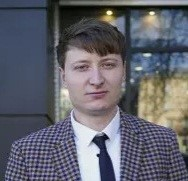

|  |
Hello, my name is: Vasile GoțonoagăI hold a degree in Engineering and Management from the Technical University of Moldova Currently, I work as a Technical Support Specialist at "Intelectsoft" SRL, where I manage orders using the Service Desk system, provide technical support to clients, and resolve software-related technical issues. I have international experience as a Warehouse Worker in Germany, where I was responsible for order preparation and quality standards maintenance. Additionally, I worked as a Rapid Courier Center Specialist at ÎS "Poșta Moldovei," contributing to database monitoring and the implementation of new technologies. I have also worked as a Real Estate Agent and Warehouse Manager at SC "Vigurcom" SRL, demonstrating team coordination and management skills. Furthermore, I am proficient in Microsoft Office tools and 1C, and I am a Front End Developer with knowledge of HTML and CSS. My native language is Romanian, and I also speak Russian at a good level, English (A1), and German (A0). I am a motivated, proactive, and results-oriented person with excellent communication and teamwork skills. I possess a high capacity for adaptation and am open to learning new things, with a willingness to engage in socio-cultural activities. |